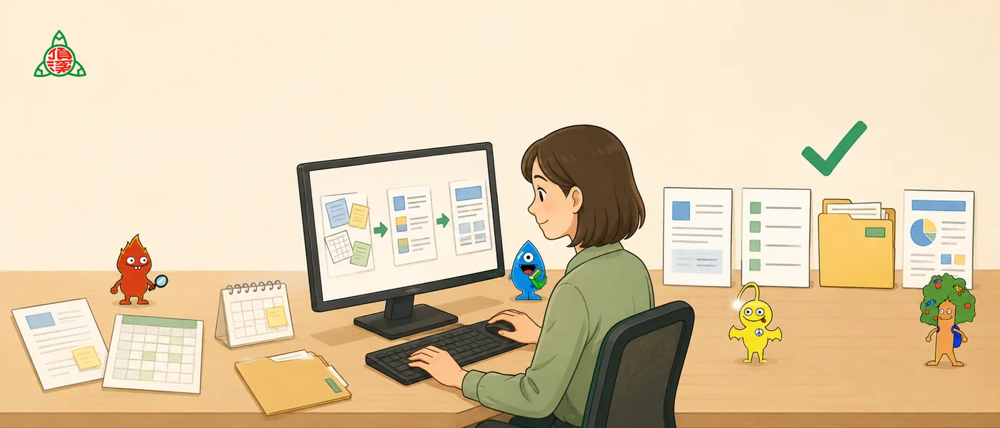

看成果
先看到一個小而完整的成品，知道 AI 可以協助到哪裡。
 頂溪國小
頂溪國小給行政伙伴的 AI 工作起點
不用先懂工具名稱。先準備能協助整理資料的 AI 工作環境，再從中文文件、工作台判斷、工作瀏覽器一路做到可發布前檢查的小作品。

第一次來的話
它不是工具清單，也不是要求大家一次學會所有技術。每個單元都把行政任務拆成幾個做得完的步驟：先準備資料，再完成一個成果，最後把順手的做法留下來。
先看到一個小而完整的成品，知道 AI 可以協助到哪裡。
再學會怎麼交資料、怎麼下指令、怎麼看懂 AI 產出的草稿。
最後把提示詞、模板與檢查清單帶回自己的工作情境，慢慢修成自己的做法。
每段都只做一件明確的事：先準備環境，再把資料變成工作台任務，最後用瀏覽器完成看得見的成果。
想跳到某一站時，可以從這裡直接進入；第一次使用仍建議從第 0 單元開始。
這段是給自己的 AI 助手看的。它會先協助檢查中文處理與文件整理所需工具，完成後再告訴你下一步怎麼交資料給它。
複製給自己的 AI 助手
你是協助學校行政同仁整理資料的 AI 助手。
我想開始使用 AI 協助處理中文行政資料與文件整理。請先幫我檢查這台 Windows 電腦是否已準備好，並協助我完成必要設定。
請先處理兩件事：
1. 中文檔案與 PowerShell 編碼安全
請參考這個工具說明，協助我避免中文檔名、中文內容或指令輸出變成亂碼：
https://github.com/chianwu-hash/windows-powershell-encoding-skill
2. 文件轉成可檢查文字
請參考這個工具說明，協助我之後把 PDF、Word、簡報或其他文件整理成可檢查的文字：
https://github.com/chianwu-hash/doc2md-toolkit
如果你有本機操作或安裝權限，請代我檢查並完成必要安裝；如果你沒有權限，請用我看得懂的步驟帶我完成，不要只丟技術文件連結給我。
完成後，請用簡短清單回報：
- 你完成了哪些檢查或安裝
- 是否還需要我手動做任何事
- 接下來我要怎麼建立本次工作資料夾，並把中文檔案、PDF、Word 或簡報交給你處理AI 可以幫忙整理、轉換、列清單、做草稿；正式送出、公告、寄信、寫入系統之前，一定要自己確認。
讓 AI 先把資料整理成表格、清單、文字稿或待確認事項。
日期、姓名、地點、金額、對外文字與個資，都要自己確認。
不要讓 AI 直接替你公告、寄信、送簽、刪除資料或修改正式資料。